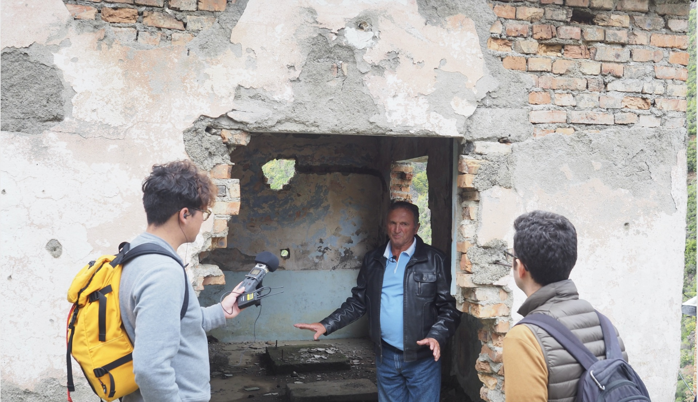
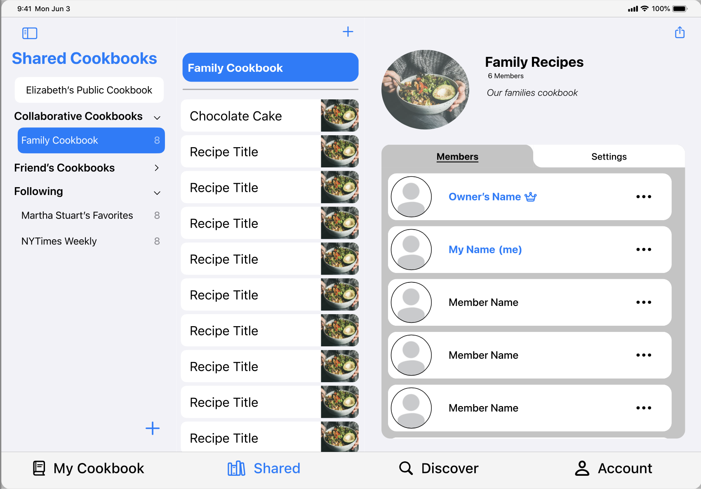

At Rivian I led an end-to-end research project. Findings were presented to senior and director level collaborators.
learn moreTags:
Diary Study, Qualitative Interviews, Qualitative Analysis

The development and testing of a prototype digital reconstruction of Spaç Prison.
learn moreTags:
Digital Reconstruction, Qualitative Interviews

Exploration and evaluation of an MVP of a collaborative digital recipe organizer targeted at famlies.
learn moreTags:
Competitive Analysis, Qualitative Interviews, Prototype Evaluation
The design, development, and evaluation of an accessible 3D video game called Factory Reset.
learn moreTags:
Usability Testing, Accessible Design, Game Development
created with
Website Builder Software .